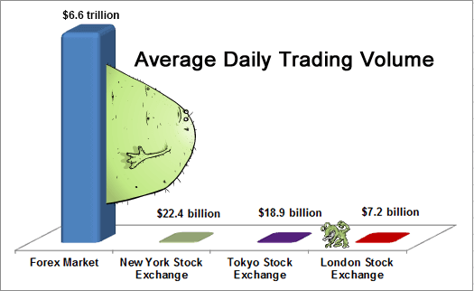
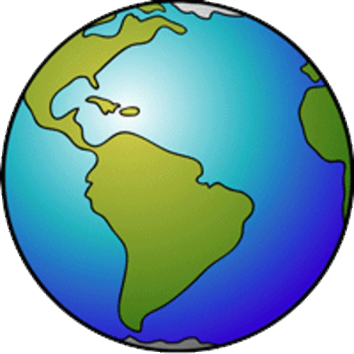

What is forex?
Quite simply, it’s the global financial market that allows one to trade currencies.
If you think one currency will be stronger versus the other, and you end up correct, then you can make a profit.
Once upon a time, before a global pandemic happened, people could actually get on airplanes and travel internationally.
If you’ve ever traveled to another country, you usually had to find a currency exchange booth at the airport, and then exchange the money you have in your wallet into the currency of the country you are visiting.
You go up to the counter and notice a screen displaying different exchange rates for different currencies.
An exchange rate is the relative price of two currencies from two different countries.
You find “Japanese yen” and think to yourself, “WOW! My one dollar is worth 100 yen?! And I have ten dollars! I’m going to be rich!!!”
When you do this, you’ve essentially participated in the forex market!
You’ve exchanged one currency for another.
Or in forex trading terms, assuming you’re an American visiting Japan, you’ve sold dollars and bought yen.
Before you fly back home, you stop by the currency exchange booth to exchange the yen that you miraculously have remaining (Tokyo is expensive!) and notice the exchange rates have changed.
It’s these changes in the exchange rates that allow you to make money in the foreign exchange market.
The foreign exchange market, which is usually known as “forex” or “FX,” is the largest financial market in the world.
The FX market is a global, decentralized market where the world’s currencies change hands. Exchange rates change by the second so the market is constantly in flux.
Only a tiny percentage of currency transactions happen in the “real economy” involving international trade and tourism like the airport example above.
Instead, most of the currency transactions that occur in the global foreign exchange market are bought (and sold) for speculative reasons.
Currency traders (also known as currency speculators) buy currencies hoping that they will be able to sell them at a higher price in the future.
Compared to the “measly” $200 billion per day volume of the New York Stock Exchange (NYSE), the foreign exchange market looks absolutely ginormous with its $6.6 TRILLION a day trade volume.
That’s trillion with a “t”.
Let’s take a moment to put this into perspective using monsters…
The largest stock market in the world, the New York Stock Exchange (NYSE), trades a volume of about $200 billion each day. If we used a monster to represent the NYSE, it would look like this…
Looks intimidating. Looks like it works out. Some may even find it sexy.
You hear about the NYSE in the news every day… on CNBC… on Bloomberg…on BBC… heck, you even probably hear about it at your local gym. “The NYSE is up today, blah, blah”.
When people talk about the “market”, they usually mean the stock market. So the NYSE sounds big, it’s loud and likes to make a lot of noise.
But if you actually compare it to the forex market, it would look like this…
Oooh, the NYSE looks so puny compared to the forex market! It doesn’t stand a chance!
Makes you wonder if the “S” in NYSE stands for “Stock” or for “Scrawny”? 🤣
The cryptocurrency market is even punier.
Check out the graph of the average daily trading volume for the forex market, New York Stock Exchange, Tokyo Stock Exchange, and London Stock Exchange:

The currency market is over 200 times BIGGER! It is HUGE!
But hold your horses, there’s a catch!
That huge $6.6 trillion number covers the entire global foreign exchange market, BUT the “spot” market, which is the part of the currency market that’s relevant to most forex traders is smaller at $2 trillion per day.
And then, if you just want to count the daily trading volume from retail traders (that’s us), it’s even smaller.
It is very difficult to determine the exact size of the retail segment of the FX market, but it’s estimated to be around 3-5% of overall daily FX trading volumes, or around $200-300 billion (probably less).
So you see, the forex market is definitely huge, but not as huge as the others would like you to believe.
Don’t believe the “forex is a $6.6 trillion market” hype! The huge number sounds impressive, but a bit misleading. We don’t like to exaggerate. We just keepin’ it real.
Aside from its size, the market also rarely closes! It’s open virtually round the clock.
The forex market is open 24 hours a day and 5 days a week, only closing down during the weekend. (What a bunch of slackers!)
So unlike the stock or bond markets, the forex market does NOT close at the end of each business day.
Instead, trading just shifts to different financial centers around the world.

The day starts when traders wake up in Auckland/Wellington, then moves to Sydney, Singapore, Hong Kong, Tokyo, Frankfurt, London, and finally, New York, before trading starts all over again in New Zealand!